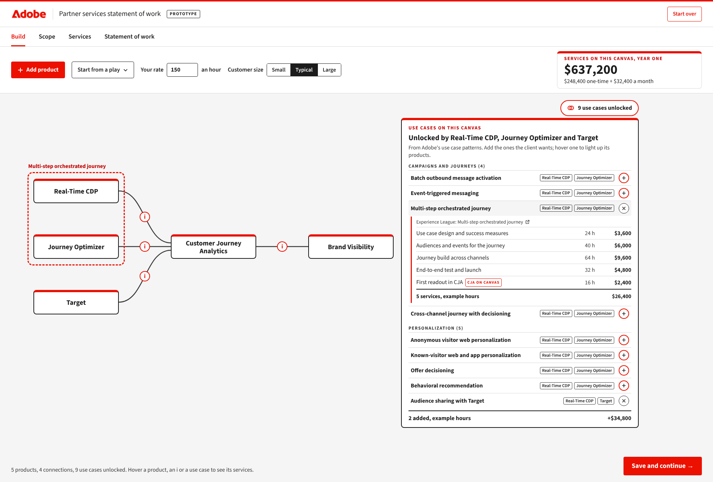

USE CASES THAT LIGHT UP
When all the products in one of Adobe's use case patterns are on the canvas, that use case lights up
A chip on the canvas counts them and opens the list. Hover a use case and its products light up; add the ones the client wants and they join the total. Real-Time CDP and Journey Optimizer alone unlock eight.

Use case names and the products they span are Adobe's (Experience League, Use Case Patterns). Their hours here are examples until each pattern is researched; the rest of the canvas uses today's real numbers.